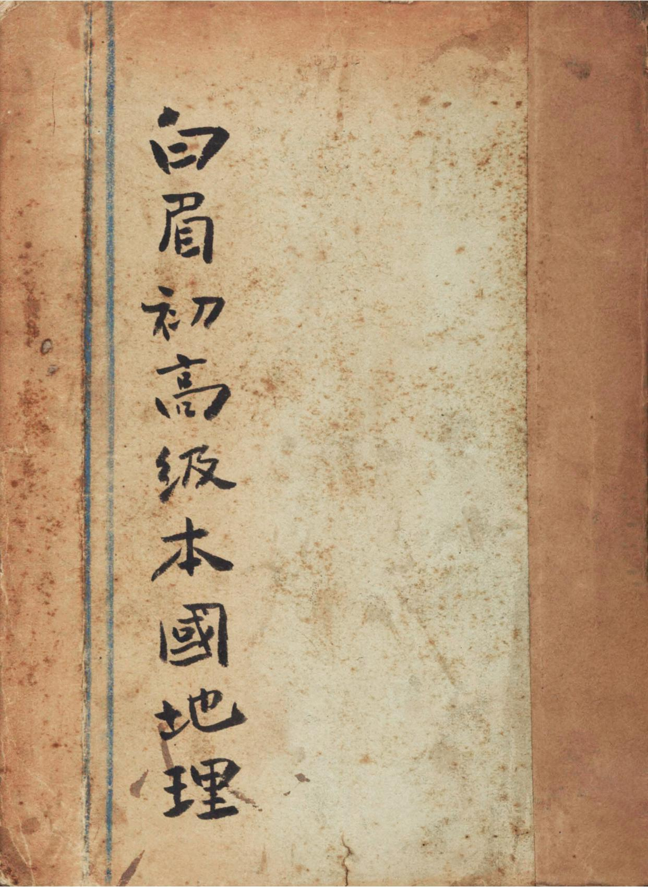

Occurrences
21
Exact minzu hits in this book

Textbook
This view contains all KWIC results for 民族 in this book, followed by the book's individual frequency result.
This table lists every minzu KWIC result found in this textbook.
| No. | Left context | Keyword | Right context |
|---|---|---|---|
| 372 | 國疆槪要第一章疆域今昔第一節歷史方面人類史前之地史,存乎層曡之迹,人類史後之地史,則存乎建設之功,吾 | 民族 | 據神洲,肇自邃古,至神農作耒耜,敎稼穡,乃進漁牧社會,入農耕社會,是爲第一次國疆建設,黃帝畫土野,製 |
| 373 | 所不許,乃有應運而起之孫中山,作物質建設一篇,若是乎今日國疆,方入第五次建設時期,第二節領域方面歐美 | 民族 | 活動,殖民地徧於世界,中國古代民族,篤守老死不相往來之遺俗,其疆域,自本部逐漸拓展,故迄今終爲一域, |
| 374 | 質建設一篇,若是乎今日國疆,方入第五次建設時期,第二節領域方面歐美民族活動,殖民地徧於世界,中國古代 | 民族 | ,篤守老死不相往來之遺俗,其疆域,自本部逐漸拓展,故迄今終爲一域,夷考上古,虞夏版宇,北幽州,東嵎夷 |
| 375 | 趾』北被大漠,是爲領域第四次擴張時期,卽漢族勢力極盛之時,是爲中古疆域槪略,自時厥後,入契丹女眞蒙古 | 民族 | 發展時期,趙宋版宇,僅與遼金對立,蒙元開國,北履西伯利亞,西割中歐,南極海表,東盡遼左,括入坤輿三分 |
| 376 | ,尙不知其凡幾,一旦富源盡闢,前途豐饒,何可勝量?漢族自六千年前,移殖斯土,今已繁衍殆徧,北端有滿蒙 | 民族 | ,西南多氏羌苗蠻,斯爲國計民生上永永寄託之基礎地磐。能緯線四十五度五十八度間爲冷帶第二節印度洋斜面水 |
| 377 | 在地史上往往兼而有之。前表所載,盆地平原面積,合計僅得全國面積百分之二十六,卽四分之一微强,吾五萬萬 | 民族 | ,衣食所資,胥恃乎此“山第一節高平原壹、西藏區域山特點及高度拉薩盆敎,環擁拉薩都會附近,東西二百里, |
| 378 | 能雍正九年,各奉金葉表文入貢,後三部合倂爲一,迨乾隆三十二年時,有北印拉齊普「一作巴勒布」州之廓爾喀 | 民族 | 來侵,時尼泊爾紐華王朝,以不能抵禦而亡,遂以廓爾喀名國,乾隆五十五年,大掠後藏札什侖布,五十七年,高 |
| 379 | 抄衛藏,俯瞰巴蜀,掌握我長江上游,三、江心坡被英窺伺壹、特點江心坡,爲我昔年里麻長官司地,其人民亦我 | 民族 | 之分支,按諸明史,雲南通志,永昌府志,騰越州志,歷歷可考,且有歷代邊疆大吏,頒給印照票據,可資憑証, |
| 380 | 實際上同於邊疆。四、都邑壹、結古位於通天河下游西側,結古河北岸,玉樹土司等二十五族會盟於此,是爲氐羗 | 民族 | 天然結晶地,特點一,今設玉樹理事及要塞司令部於此,是爲靑海南部之門戶,特點二,峰巒四立,市踞山「結古 |
| 381 | 「分池鹽石鹽,石鹽之山,全山皆鹽質結成望若水晶」曰崑崙之玉,皆無盡藏,統計其富,全國各省,無能及者。 | 民族 | 漢人數十萬,握軍政商業上之實權,蒙民十餘萬,遊牧天山北路,唯纏回達百數十萬,宛具主人翁之資格,纏回分 |
| 382 | 計,湖多魚類,鑛饒黃金,並產銅鐵煤石綿石鹽等,人種上,喀爾喀地帶,爲成吉思汗子孫所繁衍,科布多爲西蒙 | 民族 | 蟠踞地.係元代蒙人牧奴,烏梁海非蒙古種,頗類芬人Finland性質粗戇,全部以牧爲主業,獵次之,科布 |
| 383 | 會年松花江北岸,呼蘭以東,肥原廣土,爲大農區。五呼蘭以西,極於呼倫之西南部,爲大牧區,內蒙及巴爾虎等 | 民族 | ,羊群蔽野。〇內興安嶺全部,爲大獵區,:新建設時代高級本國地理敎本第三卷東北邊疆部一五一 |
| 384 | ,杜爾伯特,札爾穆阿属俄賚特三部牧地,呼倫之西南部,爲新陳巴爾虎,布里雅德”索倫等族繁殖之區,皆遊牧 | 民族 | 也,內興安嶺山中,爲鄂倫春人畋獵之場,沿山緣邊,多索倫,達呼爾人,從事弋獵,河皆獵族也,沿松花江北岸 |
| 385 | 代高級本國地理敎本大森林帶丨黑龍江一五四貳、呼倫本名呼倫貝爾,淸初荒地,雍正二年,始招服索倫巴爾虎等 | 民族 | ,編旗置佐領,「官名一旗之長光緒三十四年,稱呼倫府,民國爾時俄屬阿穆爾省改縣,城瀕海拉爾河與伊敏河會 |
| 386 | 大山東,板廠山南,姊妹山北,山作方式,一水中流,獨成區域,斯爲特點,其西(南江心坡,係武侯征蠻時遺留 | 民族 | ,世居其地,斯爲國疆.益明,被英强奪,終當收還。貳、騰衝故騰越廳治,地勢,附近擁縱長四十里之平原,西 |
| 387 | 美人在延長膚施宜君三縣所鑿之油井,槪歸失敗,其中必有重要油鑛,固可斷言,然世人希望,己不似昔年之盛。 | 民族 | ,漢人最多,回回次之,陝北高原、土瘠人稀,氣象荒凉,渭原土沃,家給人足,然多風少雨,豐歉相間,匝野乏 |
| 388 | 四十六萬方里,人口二千七百萬,平均每方里四十九人,槪係漢族,太平軍作,皖南死亡幾於絕迹,繼由兩湖河南 | 民族 | 補充,言語,淮域通行北方官話,中部屬廬州方言,微有區別,皖南徽州方言,獨成一派,民業大部農耕,潛山黃 |
| 389 | 方里五十二人,沿邊山地,人口最稀,密集於大三角洲,每方里達百人以上,與滬杭間,並爲全國人口最密之地, | 民族 | 南嶺多猺,西南邊勾漏山中多太族,卽滇暹間之撣人,海南島多黎族,由梅江東江延及海岸一帶,多客家,越王勾 |
| 390 | 寗潮油間,爲梅域唯一貨物集散塲所,特點一,人口十萬,物產米藥,爲粤民南洋華僑最多之縣,特點二,係客家 | 民族 | 根據地,剛健冒險,尙義輕生,特點三。伍,欽縣故州治,爲全國海岸上最西之縣,特點一,前臨貓尾港,舟行百 |
| 391 | 萬,平均每方里六十九人,浙西膏腴,與江蘇同爲人口最密之地,次爲沿海一帶,西南山地似閩,人口較稀,特殊 | 民族 | ,有畬,惰,九姓漁戶,等61.畬『同佘』民,屬猺族一支,散居括蒼山脈南部,人口二十萬,營農業,生活簡 |
| 392 | 業農者佔七,餘多遠道營商,每過十餘年,必有發生大旱潦之地,遽見流民載塗,其原因在不治水利,良堪浩歎, | 民族 | ,除北平有滿人,各地有回民外,大部皆爲漢族,通用官話,新建設時代高級本國地理敎本第六卷...沿海部三 |
Occurrences
21
Exact minzu hits in this book
Analysis chars
166,811
Cleaned characters used as denominator
Per 10k chars
1.26
Normalized frequency
| Subject | Geography |
|---|---|
| Textbook | 高级中国地理教本 |
| Keyword | minzu (民族) |
| Raw occurrences | 21 |
| Occurrences per 10,000 analysis characters | 1.26 |